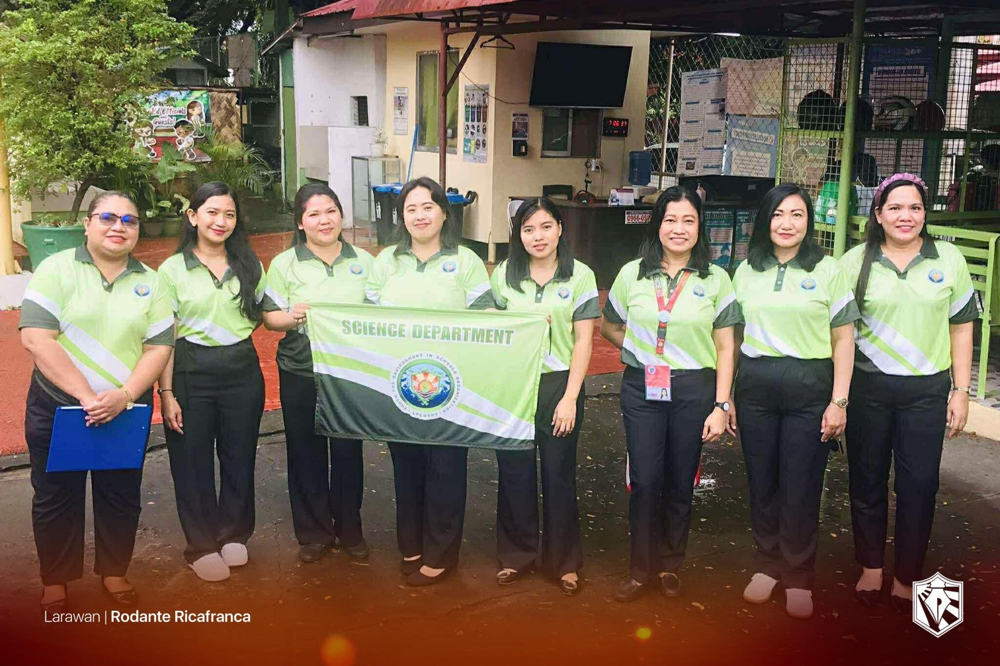
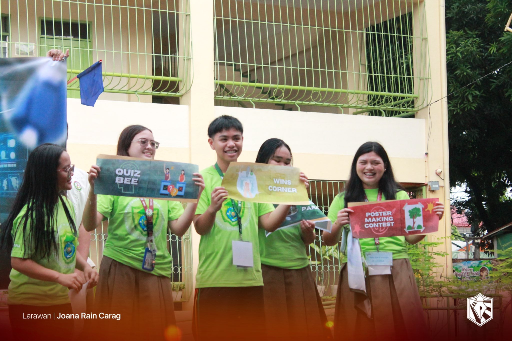

Reflection on Science Month!
What is the most important thing I learned from the event?
During Science Month, I learned that science is not just about experiments but also about helping people live healthier lives. Through activities like poster making, the WINS corner, and daily handwashing and toothbrushing, I realized how important hygiene and cleanliness are for our health. The WINS corner taught me that simple habits like washing hands and brushing teeth regularly can prevent sickness and keep our school environment safe.
How can I apply what I learned in real-life situations?
I can apply what I learned by keeping good hygiene habits every day. I will continue to wash my hands properly, brush my teeth after meals, and keep my surroundings clean. I can also remind my classmates and family to do the same so that we can all stay healthy together.
Did I actively participate in the event? How?
Yes, I actively participated in the Science Month activities. I joined the poster making activity, helped decorate our WINS corner, and took part in the daily handwashing and toothbrushing routines. These activities helped me become more responsible for my own health.
If I were to teach this topic or subject to a classmate, how would I explain it?
I would explain that Science Month teaches us to apply what we learn in science to real life. It shows us that science helps us take care of our bodies and environment through proper hygiene and cleanliness.
Why is it important to have events like this?
Events like Science Month are important because they help students understand that science is part of everyday life. They also remind us to take care of ourselves, our community, and the environment through simple scientific practices.

